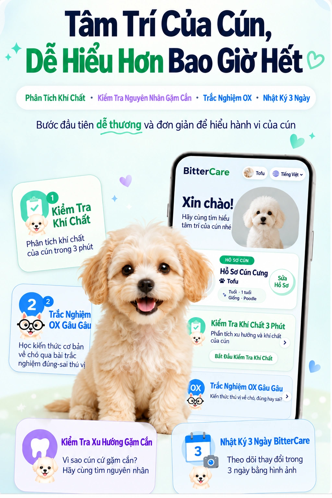

Nhớ lại hành vi gần đây
Nhớ lại phản ứng gần đây khi đi dạo, vui chơi hoặc ở nơi lạ.
FREE DOG PERSONALITY CHECK
Hành vi giống nhau có thể phản ánh tính khí khác nhau. Hãy nhớ lại phản ứng hằng ngày để tìm hiểu sự tò mò, năng lượng, cách tương tác và xu hướng gặm.
Khoảng 3 phút · Miễn phí, không cần mua hàng · Tham khảo, không phải chẩn đoán
Trắc nghiệm miễn phí
GET TO KNOW YOUR DOG
Cùng hành vi gặm, nhưng tính khí khác nhau.
Khám phá sự tò mò và năng lượng của cún
theo nhịp riêng của cún.

HOW IT WORKS
Nhớ lại phản ứng gần đây khi đi dạo, vui chơi hoặc ở nơi lạ.
Chọn hành vi cún thường làm, không phải điều bạn mong cún làm.
Xem 16 nhóm kết hợp từ bốn khía cạnh quan sát cùng gợi ý hằng ngày.
FOUR OBSERVATION AXES
Quan sát cún tiếp cận điều lạ ngay hay xem xét trước.
Xem cún thích vận động lâu hay nghỉ ngơi yên tĩnh.
Xem cún thích hoạt động cùng bạn hay tự mình khám phá.
Xem cún bình tĩnh nhanh sau khi hưng phấn hay tập trung lâu vào một việc.
16 PERSONALITY TYPES
Các nhóm giúp tìm hiểu xu hướng hiện tại, không phải nhãn cố định.
Khám phá nơi chốn và mùi mới đầu tiên.
Tràn năng lượng khi gặp người và bạn bè.
Say mê trò chơi yêu thích.
Nhận biết thay đổi nhanh và tìm bước tiếp theo.
Quan sát kỹ trước khi tiếp cận.
Thoải mái bên người quen.
Chơi trò quen thuộc theo nhịp riêng.
Quan sát và chờ thời điểm phù hợp.
Thích tự tìm lối mới.
Chủ động đến gần và thể hiện tình cảm khi muốn.
Tự chơi hoạt động yêu thích một cách vui vẻ.
Tìm cách riêng, không chạy theo xung quanh.
Thích trải nghiệm mới cùng chủ.
Phản ứng vui vẻ mang năng lượng cho mọi người.
Phản hồi của chủ giúp cún tập trung.
Thích người quen và nếp sinh hoạt ổn định.
PERSONALITY & CHEWING
Khám phá bằng miệng là điều tự nhiên với chó. Tò mò hoặc buồn chán có thể góp phần vào hành vi gặm. Xem xét vật dụng, địa điểm và tình huống giúp tìm cách chăm sóc phù hợp.
FAQ
Có. Bạn có thể dùng miễn phí mà không cần mua sản phẩm.
Không. Đây là thông tin tham khảo dựa trên quan sát. Nếu lo về sức khỏe hoặc hành vi, hãy hỏi bác sĩ thú y hoặc chuyên gia hành vi.
Có, nhưng hành vi có thể đổi theo sự phát triển và môi trường. Trả lời theo biểu hiện gần đây và kiểm tra lại sau.
Kết quả có thể khác tùy tình huống bạn nhớ lại hoặc thay đổi gần đây. Hãy xem đó là điểm bắt đầu cho việc quan sát, không phải kết luận cố định.
READY TO MEET YOUR DOG?